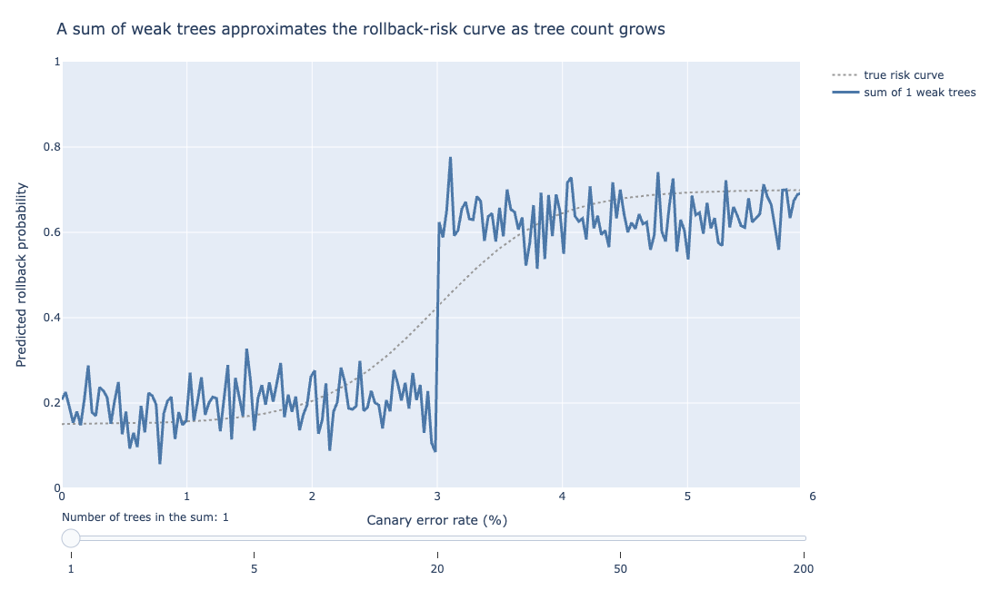
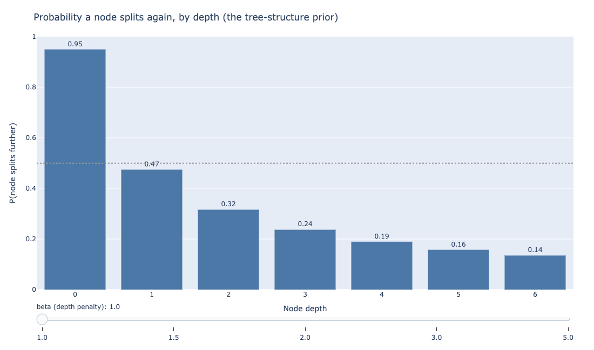
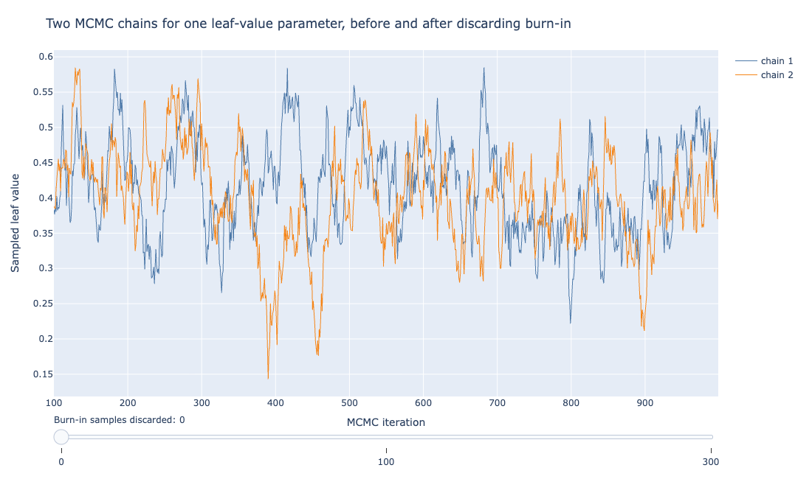
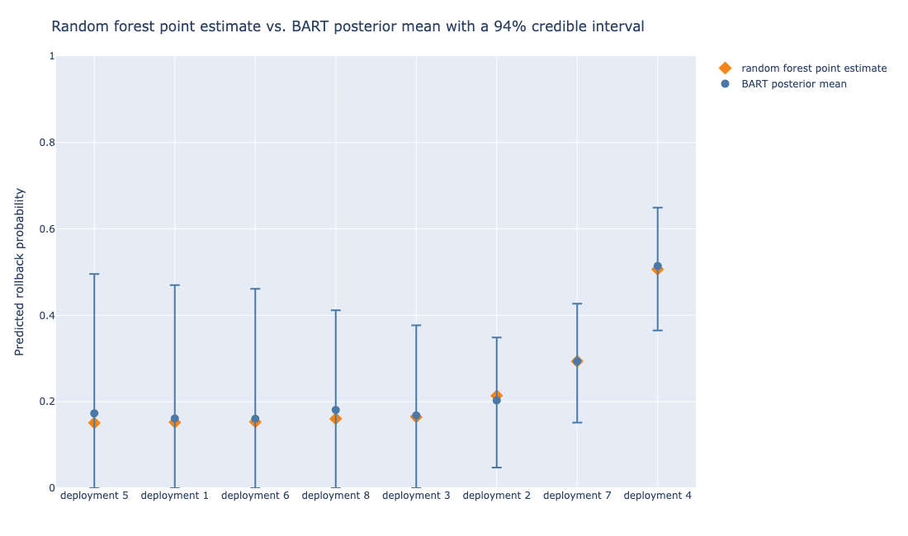
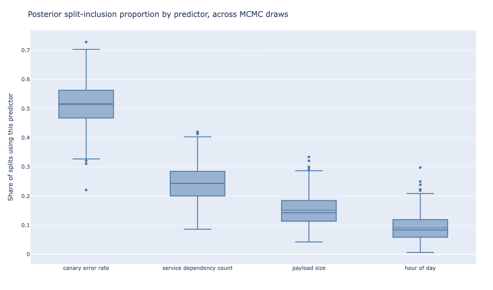

12 Bayesian Additive Regression Trees (BART)
Suppose the rollback classifier from Chapter 7 stops being a dashboard a human glances at before deciding, and becomes the decision itself: no human in the loop, a canary that scores above some threshold gets rolled back automatically, every time, at 3 a.m. included. The random forest built in that chapter can still produce the score.
What it cannot produce is an honest answer to a harder question: how much should anyone trust that particular score, for this particular deployment, given how much training data resembled this deployment. A forest of 400 trees converges on one number and stops talking.
Bayesian Additive Regression Trees (BART) is a sum-of-trees model built specifically to keep talking: instead of one score, it returns a full posterior distribution over the score.
In other words, BART hands back a whole range of plausible scores for that deployment, each weighted by how likely it is given what the model saw in training, rather than a single number with no sense of how confident to be in it. That distribution is what makes an automated rollback decision defensible rather than merely fast.
12.1 A sum of weak trees, not a vote among strong ones
The chart below approximates a step-shaped rollback-risk curve with a growing sum of shallow trees.

Think of guessing a stranger’s age from a crowd of eyewitnesses, each only allowed a small, cautious adjustment to the group’s running guess. No single witness can swing the estimate far. BART works the same way: many small, deliberately weak trees add up their tiny nudges into one confident answer.
Recall from Chapter 7 that a random forest reduces variance by averaging many strong, deep, individually overfit trees, decorrelated by restricting each split to a random subset of predictors.
BART reduces variance through a different mechanism entirely: it keeps every individual tree weak by construction, then sums many of them, typically 50 to 200, rather than averaging.
The distinction matters because it changes what a single tree in the ensemble is allowed to do. A random forest’s individual trees are grown deep and are expected to overfit; averaging is what cleans that up afterward.
BART’s individual trees are never allowed to overfit in the first place, because the prior on tree structure penalizes deep splits and the prior on each leaf’s predicted value keeps that value small.
No single tree in a BART ensemble explains much of the outcome on its own. The trees only become expressive collectively, the same way a Fourier series approximates a complicated function by summing many simple sine waves, each contributing a small correction the others could not supply.
Figure 12.1 shows this directly, with each tree contributing a small, controlled adjustment rather than any one tree attempting to capture the whole shape.
When a BART fit looks underpowered, resist the urge to deepen individual trees. Add more trees to the sum instead; depth is capped by design, and the ensemble’s expressiveness is meant to come from the count of weak trees, not the strength of any one of them.
12.2 The three priors doing the work
The chart below plots the split probability by depth for the first of the three, the tree-structure prior.

Think of three rules a strict teacher sets before grading: don’t dig too deep into any one topic, don’t let any single answer swing the grade too much, and expect some natural randomness in every score. BART’s three priors play those same roles for its trees.
Three prior distributions carry BART’s entire regularization burden, with no depth limit or hand-chosen pruning rule doing separate work.
The tree-structure prior favors shallow trees. Formally, the probability that a given node splits further decays as the node gets deeper in the tree, so most trees in the ensemble stay two or three levels deep. This is the prior that keeps any single tree from carving out a narrow, high-variance region of the feature space and memorizing it.
Figure 12.2 plots that split probability at the slider’s starting penalty of beta=1: a root node splits with near certainty (0.95), and by depth 3 that probability has fallen under one-in-four.
Drag the slider toward beta=2, the value BART’s default hyperparameters use later in this section, and the same depth-3 probability drops under one-in-ten instead.
The leaf-value prior is a Normal distribution centered at zero with a small variance, placed on the value each leaf predicts. Because that variance is small, no leaf is allowed to swing far from zero on its own; a leaf’s contribution to the final prediction is meant to be a small nudge, not a decisive vote.
The variance is chosen so that, roughly, the sum of all the trees’ contributions covers the plausible range of the outcome. That is why adding more trees to the ensemble (each contributing a smaller expected nudge) does not blow up the total prediction the way adding more unconstrained trees would.
The error-variance prior governs how much unexplained noise the model expects in the outcome itself, playing the same role a residual-variance term plays in ordinary regression. It lets the model calibrate how tightly its posterior predictive interval should hug the fitted curve.
Together, these three priors are the entire regularization mechanism. There is no separate cost-complexity pruning step, no cross-validated depth parameter to select the way Chapter 7’s single decision tree needed one. The priors do that job continuously, as part of fitting the model rather than after it.
Chipman, George, and McCulloch’s original paper settled on default values for four hyperparameters: the tree-depth penalty (\(\alpha\) and \(\beta\)), the leaf-value prior scale (\(k\)), and the number of trees (\(m\)). Most implementations, pymc-bart included, still match the paper’s defaults for the first three.
A tree-depth penalty of \(\alpha = 0.95\) and \(\beta = 2\) sets how sharply the probability of a further split decays with depth, and a leaf-value prior scaled by \(k = 2\) ensures the sum of all leaf contributions covers the observed range of the outcome with high prior probability, without needing the modeler to compute that scale by hand (Chipman, George, and McCulloch 2010).
The fourth, the number of trees \(m\), is where pymc-bart departs from the original paper: Chipman, George, and McCulloch recommended \(m = 200\), but pymc-bart’s own library default is 50 trees. That gap is part of why the code example below sets m=100 explicitly rather than leaving it at the default.
Check pymc-bart’s installed default for m before trusting an unmodified fit: at 50 trees it sits well below the 200 the original BART paper recommended, and the code in this chapter sets m=100 deliberately rather than relying on that default.
These defaults are why fitting a first BART model rarely requires much tuning on the priors that matter most. Unlike a random forest’s max_depth or a gradient-boosted model’s learning rate, both of which usually need deliberate search to get right, tuning pymc-bart rarely needs more than a glance at the tree count to land on a reasonable starting point.
That holds on most tabular problems, including the rollback classifier here.
Raising \(k\) makes the model more conservative: each leaf is pulled harder toward zero, so the fit is smoother and the credible intervals wider. Lowering it lets individual trees make bigger claims, at the cost of a fit that can look overconfident when the data does not support the claim.
12.3 How BART is fit: Bayesian backfitting
The chart below simulates two independently started MCMC chains for a single leaf-value parameter.

Think of a group project where each teammate revises their section based only on what’s left after subtracting everyone else’s current work. Each round, every teammate updates in turn, building on the others’ latest draft. Bayesian backfitting fits BART’s trees the same way, one tree at a time.
A sum of 100 trees, each with its own structure and leaf values, is not a model with a closed-form posterior: there is no formula that converts the priors and the data directly into the posterior distribution, the way simpler Bayesian models allow.
BART is fit by an MCMC (Markov chain Monte Carlo) algorithm called Bayesian backfitting, and the idea behind it connects directly to two things covered earlier in this book: gradient boosting’s residual-fitting logic (Chapter 8) and a Gibbs sampler’s one-variable-at-a-time updating logic.
At each MCMC iteration, Bayesian backfitting cycles through the trees one at a time. For a given tree, it computes the partial residual: the outcome, minus the current predictions from every other tree in the sum. That partial residual is what the tree being updated is asked to explain.
A new tree structure and new leaf values are proposed (grown, pruned, or changed at a node) and accepted or rejected according to how well they fit that partial residual, weighed against the tree-structure and leaf-value priors from the previous section.
Once every tree has been updated this way, the algorithm has produced one full posterior sample of the entire sum-of-trees model, and the cycle repeats.
This is structurally similar to how gradient boosting fits each new tree to the residual left by the trees fit so far, with two differences that matter. First, gradient boosting fits each tree once, greedily, and moves on, while Bayesian backfitting revisits every tree at every iteration, proposing changes and sometimes rejecting them.
Second, gradient boosting searches for a single best ensemble, while Bayesian backfitting samples from a posterior distribution over the whole ensemble instead.
Running this for several thousand iterations, after discarding an initial burn-in period where the chain has not yet settled into the posterior’s typical region, produces a set of posterior samples: complete sum-of-trees models, each one a plausible explanation of the training data under the prior.
Figure 12.3 shows what a convergence check looks like for one parameter deep inside the model: two independently started chains, wandering during burn-in, then settling into overlapping variation around the same value.
A full BART fit checks this kind of diagnostic (typically via the R-hat statistic, which compares between-chain and within-chain variance) across many parameters before trusting the posterior samples.
Check R-hat across every parameter in the ensemble, not only the one leaf-value trace this chapter walks through by hand. One well-behaved trace does not guarantee the rest of the sum-of-trees model has converged.
12.4 The rollback classifier in pymc-bart
The chart below compares BART’s posterior mean and 94% credible interval against the random forest’s point estimate, for eight held-out deployments spanning a range of canary error rates.

pymc-bart is the actively maintained extension to PyMC that adds a BART distribution usable inside an ordinary PyMC model, which is the standard way to fit BART in Python today. Fitting the canary-rollback classifier from Chapter 7 with it looks like this:
import pymc as pm
import pymc_bart as pmb
with pm.Model() as rollback_model:
mu = pmb.BART("mu", X=X_train, Y=y_train, m=100)
p = pm.Deterministic("p", pm.math.sigmoid(mu))
rollback = pm.Bernoulli("rollback", p=p, observed=y_train)
idata = pm.sample(2000, tune=1000, chains=4)X_train here is the same four-column feature matrix Chapter 7 used (canary error rate, payload size, hour of day, service dependency count). m=100 sets the number of trees in the sum; the PyMC-BART documentation reports good results in the 50-to-200 range for problems like this one, with fewer trees useful mainly for faster iteration while developing the model.
Once idata holds the posterior samples, pm.sample_posterior_predictive() produces a posterior predictive distribution for any new deployment, from which a credible interval follows directly by taking percentiles across the posterior draws.
arviz, paired with PyMC throughout this book’s Bayesian chapters, is the standard tool for checking convergence diagnostics on the result before trusting it. Figure 12.4 compares that posterior against the random forest’s point estimate for eight held-out deployments.
Run the R-hat and effective-sample-size checks through arviz before reading any credible interval off a BART fit. A wide interval from a chain that has not converged reflects unfinished sampling, not model uncertainty, so treat it as a signal to run more iterations rather than as a trustworthy confidence statement.
The two models’ point predictions are close, which is reassuring on its own: BART agrees with the random forest on the answer and attaches a stated margin of doubt to it. What the random forest’s single number cannot show is that the interval width differs from deployment to deployment.
Interval width here does not simply scale with the point estimate. The five lowest-probability deployments in this set carry the widest credible intervals, several reaching down to 0, while deployment 4, the one both models score as riskiest, gets the tightest interval of the eight.
That is the model being honest about which predictions rest on thin evidence in this particular held-out set, the property a fully automated rollback decision needs and a bare point estimate cannot supply.
12.5 Variable importance from the posterior
The chart below shows the same four rollback features Chapter 7 ranked, but as a distribution across MCMC draws rather than a single number per feature.

Chapter 7’s random forest measured variable importance by the total decrease in the Gini index attributable to each predictor, summed across every tree.
BART’s analog uses the posterior directly: pymc-bart provides pmb.plot_variable_importance, which counts how often each predictor gets chosen for a split, across every tree and every posterior draw, and reports the proportion.
A predictor that rarely gets split on, across thousands of posterior samples, is one the data does not support leaning on. A slower but more thorough alternative built into the same library, method="backward", measures importance by how much predictive performance drops when a variable is removed and the model is refit, one variable at a time.
Figure 12.5 shows canary error rate dominating in both chapters’ analyses, which is a useful cross-check. Two different importance mechanisms, a Gini-based one and a posterior-split-count one, agree on the ranking, which is stronger evidence that the ranking reflects something in the data rather than an artifact of either method.
The box plots here also show something the random forest’s single bar chart cannot: how much the posterior itself disagrees, draw to draw, about how important service dependency count is relative to payload size.
That disagreement is smaller than the uncertainty around any individual prediction, but it does not disappear.
When two predictors’ importance boxes overlap this much, treat their relative order as unsettled rather than reading a ranking off the median line alone. Refit with method="backward" if the distinction matters for a downstream decision.
12.6 What this costs, and what it is worth
Fitting a random forest of several hundred trees takes seconds and parallelizes trivially, since every tree is independent of every other tree. Fitting BART means running an MCMC chain to convergence, which is slower by roughly one to two orders of magnitude for a dataset this size.
BART does not parallelize within a single chain the way a random forest’s independent trees do, since each MCMC iteration’s proposal depends on the state left by the previous one. Running multiple independent chains still leaves a fit one to two orders of magnitude slower than a random forest’s near-instant fit.
Running multiple independent chains (as the code above does, with chains=4) does parallelize, and is also how convergence gets checked, but it does not close the gap with a random forest’s near-instant fit.
BART also does not scale to the same dataset sizes or feature counts as easily. The canary-rollback problem, with a few hundred to a few thousand historical deployments and four features, sits comfortably within BART’s practical range.
A dataset with millions of rows or hundreds of features pushes MCMC sampling time high enough that a random forest or gradient boosting (Chapter 8) becomes the only practical option, full posterior or not.
For readers coming from R, where most of the original BART tooling was built, the dbarts and BART packages predate pymc-bart by years and remain the reference implementations much of the applied literature on BART was written against.
pymc-bart’s advantage for a Python-first team is that it composes directly with the rest of a PyMC model, the same way the logistic regression chapter’s Bayesian section used PyMC directly.
The trade-off is not a verdict against BART, only a scope for when to reach for it. A dashboard a human reviews before acting, where a point estimate plus a rough sense of the model’s overall error rate is enough context for a person to apply judgment, does not need BART’s added compute.
An automated rollback system making the call alone, at any hour, with no person in the loop to catch an overconfident wrong answer, is the situation where knowing how much to trust each individual prediction is worth the extra time it takes to get that answer.
12.7 The credible interval as a decision rule
A random forest’s OOB error gives one number for how often the whole system is wrong; it says nothing about which individual predictions to distrust.
BART’s per-deployment credible interval can be turned into a routing rule directly: automate the rollback decision only when the interval is narrow enough to trust unattended, and fall back to paging an on-call engineer when it is not.
Concretely, a team could set a width threshold on the 94% credible interval, say 0.15 on the probability scale, and split deployments into two paths. A deployment whose interval falls inside that width gets the automated rollback decision the posterior mean supports.
A deployment whose interval is wider than that gets routed to a human instead of an automated guess the model itself is not confident in.
That wider interval typically means the deployment’s feature combination sits outside the dense region of historical training data, such as an unusually large payload arriving at an unusual hour with an unusually high dependency count all at once.
Set the credible-interval width threshold before looking at how any specific deployment scores, not after. Picking a threshold to match a preferred outcome turns a statistical safeguard into a rubber stamp.
This is not something a random forest’s point estimate can support without a separate, ad hoc mechanism for estimating per-prediction confidence. BART’s posterior gives it for free: the interval width is part of what the model computes for every prediction, with no separate step required.